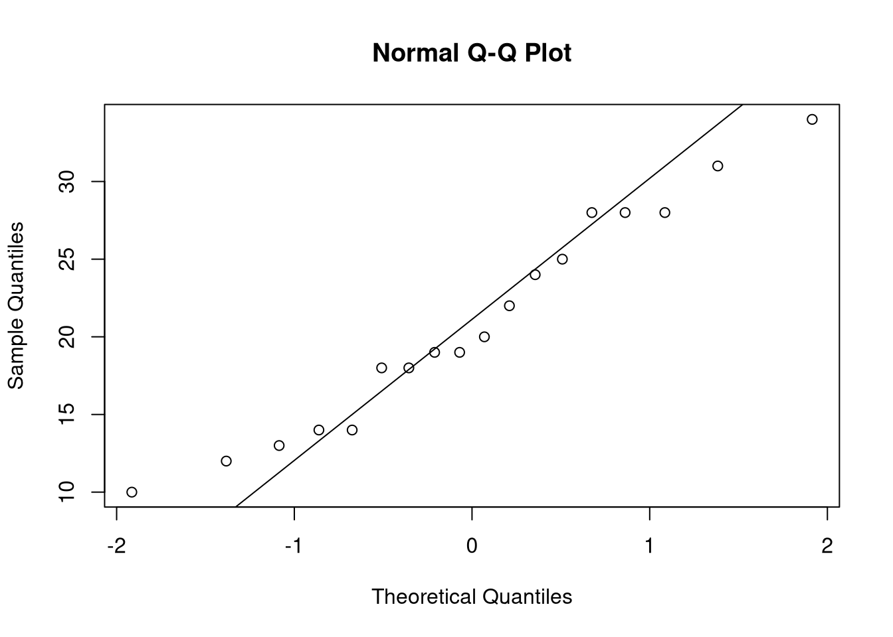
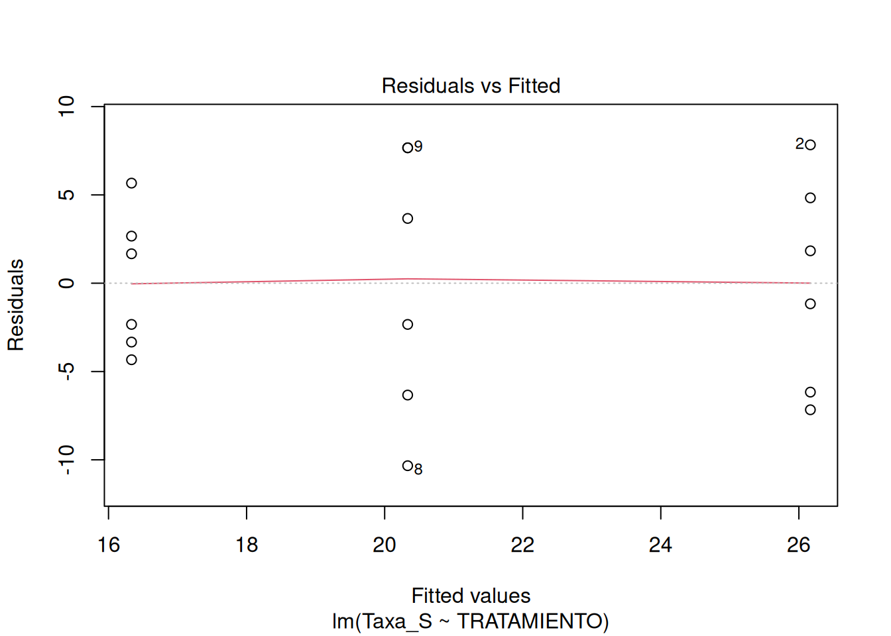
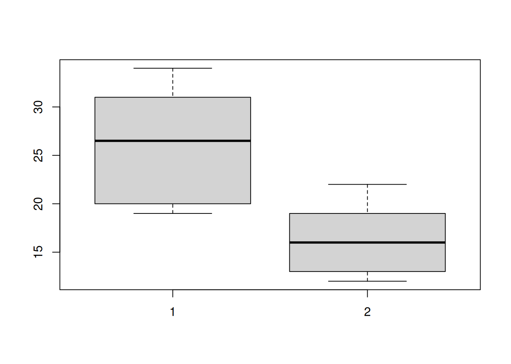
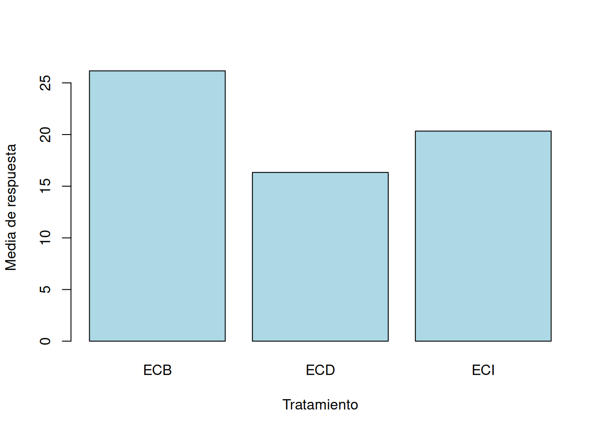
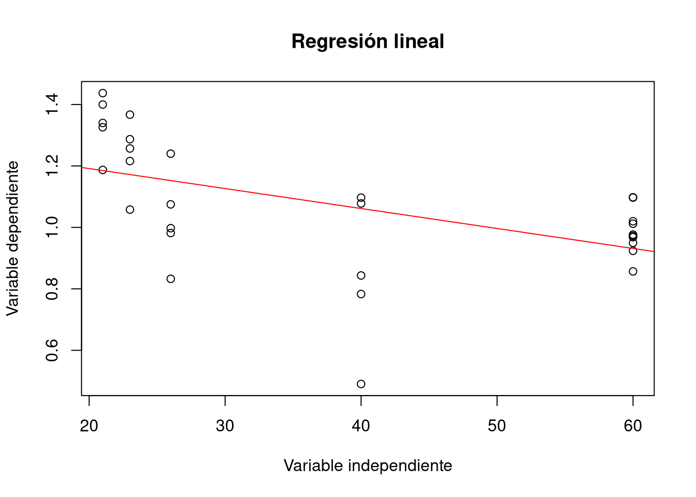
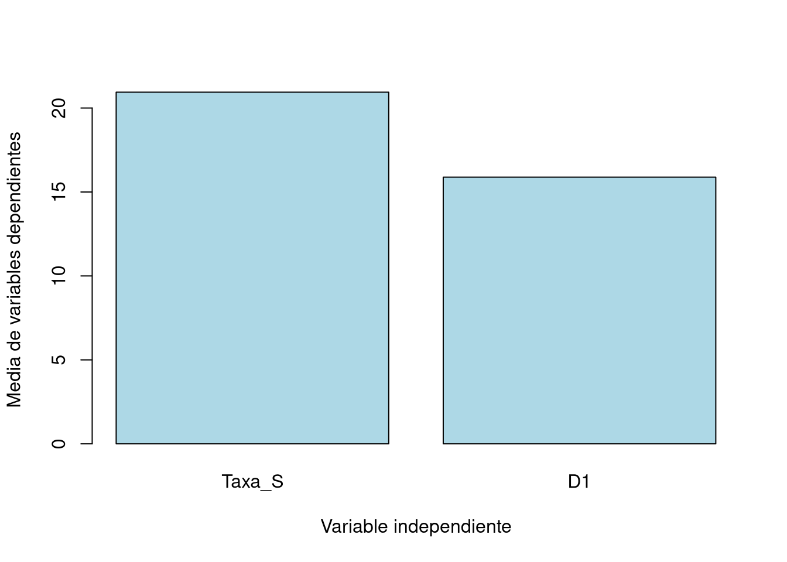
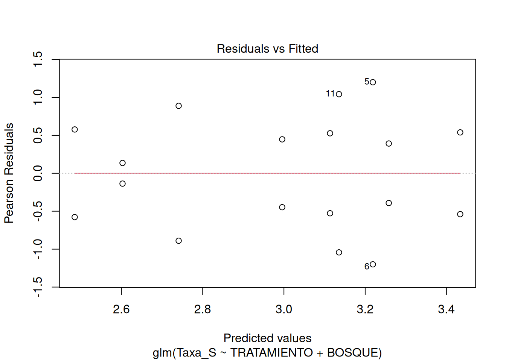
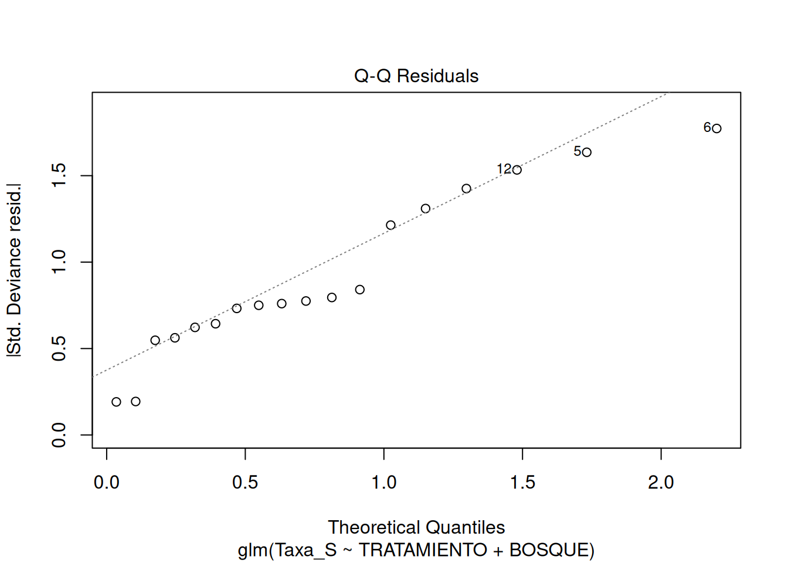

Capítulo 4: Pruebas de hipótesis estadísticas en estudios ecológicos
Prueba de normalidad de Shapiro-Wilk
##
## Shapiro-Wilk normality test
##
## data: hormigas$Taxa_S
## W = 0.96155, p-value = 0.6319

Figura 1: Gráfico Q-Q (cuantil-cuantil)
Prueba de Levene
## Levene's Test for Homogeneity of Variance (center = median)
## Df F value Pr(>F)
## group 2 2.1094 0.1559
## 15

Figura 2: Gráfico de residuos vs. ajustes
Prueba t de Student
grupo_1 <- hormigas$Taxa_S[hormigas$TRATAMIENTO == "ECB"]
grupo_2 <- hormigas$Taxa_S[hormigas$TRATAMIENTO == "ECD"]
resultado <- t.test(grupo_1, grupo_2)
resultado##
## Welch Two Sample t-test
##
## data: grupo_1 and grupo_2
## t = 3.3651, df = 8.6431, p-value = 0.008815
## alternative hypothesis: true difference in means is not equal to 0
## 95 percent confidence interval:
## 3.181152 16.485515
## sample estimates:
## mean of x mean of y
## 26.16667 16.33333boxplot(hormigas$Taxa_S[hormigas$TRATAMIENTO == "ECB"], hormigas$Taxa_S[hormigas$TRATAMIENTO == "ECD"])

Figura 3: Diagrama de caja
ANOVA
## Df Sum Sq Mean Sq F value Pr(>F)
## TRATAMIENTO 2 293.4 146.72 4.079 0.0385 *
## Residuals 15 539.5 35.97
## ---
## Signif. codes: 0 '***' 0.001 '**' 0.01 '*' 0.05 '.' 0.1 ' ' 1## Tukey multiple comparisons of means
## 95% family-wise confidence level
##
## Fit: aov(formula = Taxa_S ~ TRATAMIENTO, data = hormigas)
##
## $TRATAMIENTO
## diff lwr upr p adj
## ECD-ECB -9.833333 -18.827067 -0.8395992 0.0314203
## ECI-ECB -5.833333 -14.827067 3.1604008 0.2431159
## ECI-ECD 4.000000 -4.993734 12.9937342 0.4965952barplot(tapply(hormigas$Taxa_S, hormigas$TRATAMIENTO, mean),
names.arg = levels(hormigas$TRATAMIENTO),
ylab = "Media de respuesta",
xlab = "Tratamiento",
col = "lightblue")

Figura 4: Diagrama de barras ANOVA
Regresión lineal
##
## Call:
## lm(formula = Div_Shan ~ IHH, data = moscas)
##
## Residuals:
## Min 1Q Median 3Q Max
## -0.57104 -0.07673 0.03868 0.10845 0.25210
##
## Coefficients:
## Estimate Std. Error t value Pr(>|t|)
## (Intercept) 1.321362 0.084217 15.69 2.11e-15 ***
## IHH -0.006498 0.002018 -3.22 0.00324 **
## ---
## Signif. codes: 0 '***' 0.001 '**' 0.01 '*' 0.05 '.' 0.1 ' ' 1
##
## Residual standard error: 0.1822 on 28 degrees of freedom
## Multiple R-squared: 0.2702, Adjusted R-squared: 0.2441
## F-statistic: 10.37 on 1 and 28 DF, p-value: 0.003241plot(
moscas$IHH, moscas$Div_Shan,
xlab = "Variable independiente",
ylab = "Variable dependiente",
main = "Regresión lineal"
)
abline(modelo, col = "red")

Figura 5: Gráfico regresión lineal
MANOVA
## Df Pillai approx F num Df den Df Pr(>F)
## TRATAMIENTO 2 0.385 1.7879 4 30 0.1573
## Residuals 15barplot(colMeans(hormigas[, c("Taxa_S", "D1")]),
names.arg = levels(hormigas$TRATAMIENTO),
ylab = "Media de variables dependientes",
xlab = "Variable independiente",
col = "lightblue")

Figura 6: Gráfico resultados MANOVA
Prueba de Krustal-Wallis
##
## Kruskal-Wallis rank sum test
##
## data: Taxa_S by TRATAMIENTO
## Kruskal-Wallis chi-squared = 6.3117, df = 2, p-value = 0.0426library(dunn.test)
posthoc <- dunn.test(hormigas$Taxa_S, g = hormigas$TRATAMIENTO, method = "bonferroni")## Kruskal-Wallis rank sum test
##
## data: x and group
## Kruskal-Wallis chi-squared = 6.3117, df = 2, p-value = 0.04
##
##
## Comparison of x by group
## (Bonferroni)
## Col Mean-|
## Row Mean | ECB ECD
## ---------+----------------------
## ECD | 2.496428
## | 0.0188*
## |
## ECI | 1.492430 -1.003998
## | 0.2034 0.4731
##
## alpha = 0.05
## Reject Ho if p <= alpha/2Prueba de coerrelación de Spearman
##
## Spearman's rank correlation rho
##
## data: moscas$Riqueza and moscas$IHH
## S = 4934.1, p-value = 0.6076
## alternative hypothesis: true rho is not equal to 0
## sample estimates:
## rho
## -0.09768012Prueba Mann-Whitney U
ecb_vs_ecd <- subset(hormigas, TRATAMIENTO %in% c("ECB", "ECD"))
resultado_mann_whitney <- wilcox.test(Taxa_S ~ TRATAMIENTO, data = ecb_vs_ecd)
resultado_mann_whitney##
## Wilcoxon rank sum test with continuity correction
##
## data: Taxa_S by TRATAMIENTO
## W = 33.5, p-value = 0.01612
## alternative hypothesis: true location shift is not equal to 0PERMANOVA
library(vegan)
resultado_permanova <- adonis(Taxa_S ~ TRATAMIENTO, data = hormigas, permutations = 999)
resultado_permanova$aov.tab## Permutation: free
## Number of permutations: 999
##
## Terms added sequentially (first to last)
##
## Df SumsOfSqs MeanSqs F.Model R2 Pr(>F)
## TRATAMIENTO 2 0.15135 0.075674 3.4418 0.31456 0.052 .
## Residuals 15 0.32980 0.021987 0.68544
## Total 17 0.48115 1.00000
## ---
## Signif. codes: 0 '***' 0.001 '**' 0.01 '*' 0.05 '.' 0.1 ' ' 1Modelo lineal generalizado GLM
##
## Call:
## glm(formula = Taxa_S ~ TRATAMIENTO + BOSQUE, family = poisson(),
## data = hormigas)
##
## Coefficients: (2 not defined because of singularities)
## Estimate Std. Error z value Pr(>|z|)
## (Intercept) 3.21888 0.14142 22.761 < 2e-16 ***
## TRATAMIENTOECD -0.47804 0.22860 -2.091 0.03652 *
## TRATAMIENTOECI 0.03922 0.19807 0.198 0.84303
## BOSQUEESC 0.21511 0.19008 1.132 0.25776
## BOSQUEESQ -0.77319 0.24677 -3.133 0.00173 **
## BOSQUEPAN 0.25489 0.23929 1.065 0.28678
## BOSQUEPCI -0.12260 0.20241 -0.606 0.54471
## BOSQUEPCII -0.10536 0.20548 -0.513 0.60812
## BOSQUEPIN -0.13815 0.26324 -0.525 0.59972
## BOSQUERCH NA NA NA NA
## BOSQUEVED NA NA NA NA
## ---
## Signif. codes: 0 '***' 0.001 '**' 0.01 '*' 0.05 '.' 0.1 ' ' 1
##
## (Dispersion parameter for poisson family taken to be 1)
##
## Null deviance: 40.3125 on 17 degrees of freedom
## Residual deviance: 9.2478 on 9 degrees of freedom
## AIC: 114.23
##
## Number of Fisher Scoring iterations: 4